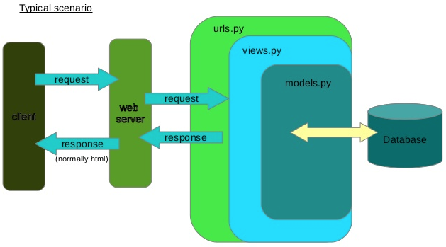

Django⚓︎
The reference repository is sannae/djangocrm.
Resources
- The main Django documentation is available here.
- Another nice learning path is in Microsoft Learn and in the Microsoft Developers Youtube channel.
Tutorials
- Create a CRM web app by Dennis Ivy
- Create an expense tracking web app
- Django tutorial
- Django Testing
- Django Testing Automation with GitHub Actions by VeryAcademy
- Django and Docker by VeryAcademy
Requirements⚓︎
- Python (
python3 -Von Linux,python -Von Windows) - Django, check if it's installed with a simple
python -m django --version
All the required Python packages are listed in requirements.txt (to be updatable with pip freeze > requirements.txt), run pip install -r requirements.txt to load them in your environment.
 Always run
Always run pip freeze from a virtual environment! Or it will just go on filling with c**p when deploying from any Cloud platform.
Random notes⚓︎
About Django's architecture and MVT pattern⚓︎
Create a project⚓︎
- A Django project is "A Python package – i.e. a directory of code – that contains all the settings for an instance of Django. This would include database configuration, Django-specific options and application-specific settings." (source and tutorial)
- To get started with a project:
- Create a folder for your project:
mkdir PROJECT_NAME: - Move in your project folder:
cd PROJECT_NAME - Remember to activate your virtual environment:
python3 -m venv venvandsource venv/bin/activate - Install the dependencies (
python3 -m pip install django) and freeze them in a file (python3 -m pip freeze > requirements.txt) - Create the core of the project:
django startproject core . - The command
startprojectwill create the following folder structure in your project folder:manage.py # django command-line utility (check "python manage.py --help") core/ # main project folder __init__.py # empty file telling Python that this directory should be considered a package settings.py # all of your settings or configurations urls.py # URLs within the project asgi.py # entry point for your web servers if asgi server is deployed wsgi.py # entry point for your web servers if wsgi server is deployed
- Create a folder for your project:
Create an app⚓︎
- Within the project, there may be several apps: each app structure is created in your project folder with
py -m django startapp APPLICATION_NAME(from the same directory asmanage.py)- The app has the following structure:
APPLICATION_NAME/ # main app folder __init__.py # empty file telling Python that this directory should be considered a package admin.py # file used to register admin templates apps.py # list of apps migrations/ # list of migrations __init__.py # empty file telling Python that this directory should be considered a package models.py # models of the app tests.py # tests included in the app, see the corresponding section views.py # views of the app - Add the
APPLICATION_NAME\urls.pyto map the routes in your application, with the following default content to create the home path:from django.urls import path from . import views urlpatterns = [ path('', views.index, name='index'), ] - The path management must also be handled by the main
PROJECT_NAME\urls.pyfile, where you should add at the beginning:and in thefrom django.urls import include, pathurlpatternslist (replacingAPPLICATION_NAME):path('', include('APPLICATION_NAME.urls')), - Register the application in the
PROJECT_NAME\apps.pyfile and to add it to theINSTALLED_APPSlist insettings.pyor the project won't be able to load it when running! - Add the following test content in
APPLICATION_NAME\views.py:from django.shortcuts import render from django.http import HttpResponse def index(request): return HttpResponse("Hello, world!")
- The app has the following structure:
- The live web server is started with
py -m django manage runserverand is reachable at http://localhost:8000
Misc.⚓︎
- Django follows the MVC architecture (Model-View-Controller), although it uses a non-idiomatic way of naming its parts:
A schematic view is available below: Idiomatic term | Django term | Meaning Model | Model | Contains all the business logic. At the very least the database access logicView | Template | Responsible for generating the HTML and other UI Controller | View | Contains the logic to tie the other parts together and to generate a response to a user request - Oversimplifying, to add a feature you
1) Update the model in
models.py(if needed) 2) Create or update the corresponding view inviews.py3) If the new feature opens a new page, create the new html page intemplates/and add it tourls.py - General application secrets (i.e. database user, database password, secret key, etc.) are decoupled from the application with a JSON file not tracked by Git and using the
get_secretfunction insettings.py. The function is:Then create your git-untracked# Secrets with open(os.path.join(BASE_DIR, 'secrets.json')) as secrets_file: secrets = json.load(secrets_file) def get_secret(setting, secrets=secrets): """Get secret setting or fail with ImproperlyConfigured""" try: return secrets[setting] except KeyError: raise ImproperlyConfigured("Set the {} setting".format(setting))secrets.jsonfile with the following structure:So that you can call your secrets from within the rest of the app by using:{ "SECRET_KEY" : "YOUR_SECRET_KEY", "DB_USER": "YOUR_DB_USER", "DB_PASSWORD": "YOUR_DB_PASSWORD", ... }SECRET_KEY = get_secret('SECRET_KEY') - In the admin site, the display shows the name of the
Customeror theProductfor the registered models. This information appears because we set the__str__method on our objects. The default display of any object is the value returned by__str__.
About templates⚓︎
- Django is embedded in HTML via template tags
- The views of the app call the templates saved in
APPLICATION_NAME/templates/APPLICATION_NAME(according to a Django's convention) -
The templates use a combination of HTML/CSS/JS and Django's
{% templatetags %}syntax: this lets you modularize the code- Template tags can also be used to create the usual blocks to be run inside the template:
- if/else statements:
{% if somethings %} <h3>There are {{ somethings.length }} things</h3> {% else %} <h3>Nothing here!</h3> {% endif %} - for loops:
<ul> {% for thing in somethings %} <li>{{ thing.name}}</li> {% endfor %} </ul>
- if/else statements:
- Template tags can also be used to create the usual blocks to be run inside the template:
-
The variables in the templates are called like in the corresponding views and rendered with the field
{{ variable }}- They can even be piped to a specific function or filter within the double curly braces, like in
{{ variable.field | function }}
- They can even be piped to a specific function or filter within the double curly braces, like in
- The HTML/CSS/JS templates use Bootstrap
- Do not comment Django template tags with usual HTML comments, as described in this Stack Overflow post!!
<!-- this is the usual HTML comment --> <!-- {% This is an uncommented Django tag %} --> <!-- {#% This is a commented Django tag %#} -->
About models⚓︎
-
In your
models.pyfile, you can add a first test model like:class MODEL_NAME(models.Model): pass -
In using the
ForeignKeyrelationship between a 'parent' field and a 'child' field inmodels.py, Django automatically adds a property to the parent to provide access to all children called<child>_set, where<child>is the name of the child object. Below an example:from django.db import models class Product(models.Model): name = models.TextField() category = models.ForeignKey( 'Category', #The name of the model on_delete=models.PROTECT ) class Category(models.Model): name = models.TextField() # product_set will be automatically created
About URLs⚓︎
This is how URLs work in Django:
About static files⚓︎
- To upload the static files into an AWS S3 bucket, check out the documentation of django-storages. You basically need the
django-storagesandboto3Python libraries, as well as the following additional settings insettings.py:Here's a nice tutorial on creating a Django project with static files on AWS S3 and Docker Compose. This one also is a very good article.AWS_ACCESS_KEY_ID = get_secret('AWS_ACCESS_KEY_ID') AWS_SECRET_ACCESS_KEY = get_secret('AWS_SECRET_ACCESS_KEY') AWS_STORAGE_BUCKET_NAME = get_secret('AWS_STORAGE_BUCKET_NAME') AWS_S3_HOST = 's3.eu-west-3.amazonaws.com' AWS_S3_REGION_NAME = 'eu-west-3' AWS_S3_FILE_OVERWRITE = False AWS_DEFAULT_ACL = None DEFAULT_FILE_STORAGE = 'storages.backends.s3boto3.S3Boto3Storage' STATICFILES_STORAGE = 'storages.backends.s3boto3.S3Boto3Storage'
About user authentication⚓︎
- Django comes with a built-in user management and authentication system, where you can manage:
- Simple users (
user), unable to access the admin site - Staff users (
staff), i.e. accessing the admin site but unable to change Data -
superusers: you can create one with
python manage.py createsuperuser -
To restrict the user's login, add the
@login_required(login_url='login')decorator fromdjango.contrib.auth.decoratorsabove any restricted view inviews.py[manual method] - Likewise, you don't want any logged-in user to be able to access the
'login'or the'register'page: add theif request.user.is_authenticatedin those views to handle it [ manual method ] - Decorators can be listed in a dedicated
\APPLICATION_NAME\decorators.pyfile. A decorator is a function that takes another function as a parameter. Decorators are called with the@symbol - Adding a property to a user: check this documentation
Sending emails (e.g. to reset the user's password)⚓︎
- The main settings are saved in the
settings.pyfile under theEMAIL_parameters - In our example, Gmail was used as the SMTP host; any external login attempt would be blocked by default by Gmail unless you allow "less secure apps" access (here's the link). BTW it doesn't work directly with MFA accounts, where you'd need a specific App password.
- The
urls.pymust met specific criteria: use the predefined Authentication Views fromdjango.contrib.authand remember to use the corresponding URLs' names - If you want to customize all the pre-built forms used by Django's Authentication Views, you can find the templates' names within their definitions. Override the default in your
urls.pyby specifying.as_view(template_name="accounts/TEMPLATE_NAME.html")in the URL line
About database and relationships⚓︎
- To initiate the database, run
py -m manage migrate: the database's settings are inSETTINGS.pyand SQLite3 is the default. - To run progressive migrations, edit your models then run
py -m manage makemigrationsto create your migration files (preparation files before actual migration) in/APPLICATION_NAME/migrations/. Remember to register your models in the admin panel to see them.The
makemigrationscommand uses the current list of migrations to get a starting point, and then uses the current state of your models to determine the delta (the changes that need to be made). It then generates the necessary code to update the database. - To view the SQL commands related to a specific migration, run
python manage.py sqlmigrate APPLICATION_NAME MIGRATION_NAME - To list the migrations,
python manage.py showmigrations - To retrieve data from the db, use this reference guide:
1) Open your Django shell (
py -m manage shell) 2) Import all your models (from APPLICATION_NAME.models import *) 3) Specific tables are then available as objects withTABLENAME.objects.all()and other methods. 1) Example: to retrieve all the customers saved with theCustomermethod, runCustomer.objects.all()2) Example: to retrieve all the customers with a specific name, runCustomer.objects.all().filter(name="YOURNAME") - For foreign keys, you can use the
_setproperty of the parent object:Product.customer_set.all() - Example of
INSERTfrompython manage.py shell:orfirst_customer = Customer( name="Mary Ann", location="USA", ...) first_customer.save()Product(name="Shoes", customer=first_customer).save() - A function to specifically create random orders was implemented in the
management\commands\populate-db.pyfunction, inspired by this article.
Postgresql⚓︎
- After first testing, migrate the db from SQLite to PostgreSQL using these instructions.
Warning
When following the above link, if incurring in the error ModuleNotFoundError: No module named 'django.db.migrations.migration', you may have deleted also the migrations in the /django/db/migrations folder. You may just need to force reinstall Django.
Tests⚓︎
- Check out the Django documentation about testing tools!
- To get started with testing, create a folder
APPLICATION_NAME\Testscontaining all yourtest_WHATEVER.pyfiles, where WHATEVER includes models, views, forms, etc.- In this case you will have to delete the
APPLICATION_NAME\tests.pyfile, originally created with the app - Remember to create the
__init__.pyfile in theTests/folder! Or the tests contained in it won't be found by the Django integrated test runner
- In this case you will have to delete the
- To make Django go through the tests, just run
python3 -m manage test APPLICATION_NAME: Django will recursively look for all the classes and functions whose name starts withtest* - In any test, the
assertstatement is the one being tested: a failing test will returnAssertionError - Assertions are part of the
SimpleTestCaseclass, containing the most simple unit tests (like testing HTML responses, comparing URLs, verifying HTTP redirect, testing form fields, etc.)
Deployment⚓︎
- Before deploying, remember to:
- Turn
Debug = FALSEinsettings.py - Add the remote host to the
ALLOWED_HOSTSinsettings.py, likeALLOWED_HOSTS = [ get_secret('HEROKU_HOST'), # For production purposes (Debug=FALSE) "127.0.0.1" # For testing purposes (Debug=TRUE) ]
- Turn
Deploy on Heroku⚓︎
Your project needs the Gunicorn and Whitenoise pip modules installed
- After logging in (
heroku login -i), connect to your Heroku app using the Heroku CLI an runningheroku git:remote --app=HEROKU_APP_NAMEto add a remote origin to your Git tracking in the project - Add a
procfile(no extension!) to your project: it's needed by Heroku to specify a process type. Inside of it, just typeweb: gunicorn YOUR_APP_WSGI_NAME.wsgi --log-file - - Remember to specific a build pack (i.e. Python) in your Heroku app settings
- In the manual deploy from the Heroku app page, you may need to remove some specific requirements' versions (as described in this post) from
requirements.txt(but first, remember to check this!) - Heroku doesn't know how to serve static files, so it is better to install Whitenoise and use it in the
MIDDLEWAREsection of yoursettings.pyfile
Deploy on Docker⚓︎
- Write your Dockerfile: the base image is the official Python Docker image as the Django image is deprecated. The application directory is copied in the workdir
/usr/src/appand the requirements are installed using therequirements.txtfile. Lastly, themanage runservercommand is executed to start the web server.# Base image FROM python # Working directory WORKDIR /usr/src/app # Install dependencies COPY requirements.txt ./ RUN pip install --upgrade pip RUN pip install --no-cache-dir -r requirements.txt # Copy the whole app folder COPY . . # Run web server CMD [ "python", "manage.py", "runserver", "0.0.0.0:8000" ] - Build the image using
docker build -t my-django-image .from the path of the Dockerfile (it may require a few minutes 🕰) - Start the container with
docker run --name my-django-cont -d -p 8000:8000 my-django-image - Verify that your container has been created with
docker ps -a - Open your web application on a browser with http://HOSTNAME:8000 where
HOSTNAMEis included in theALLOWED_HOSTSlist insettings.py - [optional] Interact with your container with
docker exec -it my-django-cont bash
Clean your environment
- docker stop my-django-cont
- docker rm my-django-cont
- docker image rm my-django-image
- docker image rm python
Deploy on Azure Web Apps⚓︎
TBD